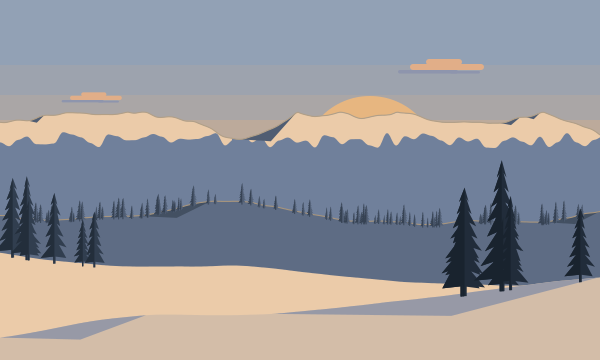
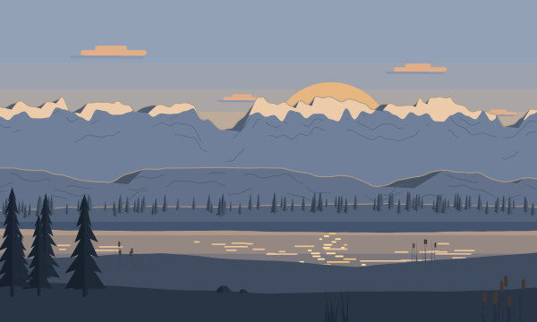
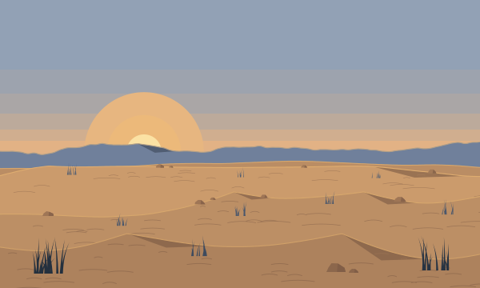
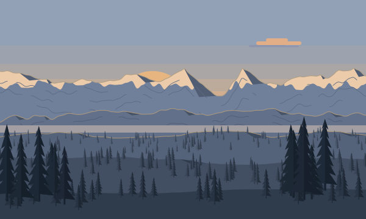
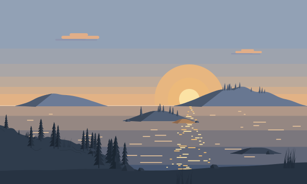
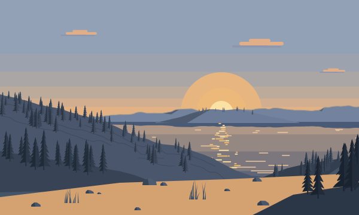
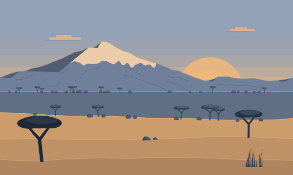
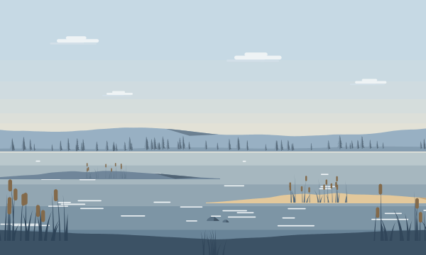

Démêle tes journées.
Un journal du soir pour raconter ta journée, à l'écrit ou à la voix, et y voir plus clair. Chaque soirée allume une étoile.
Bientôt sur l'App StoreUn journal du soir pour raconter ta journée, à l'écrit ou à la voix, et y voir plus clair. Chaque soirée allume une étoile.
Bientôt sur l'App StoreLe soir
Pas de page blanche à remplir, pas de série à tenir. Juste ce qui s'est passé aujourd'hui, et un peu de recul avant de dormir.
Quelques mots, écrits ou dictés. Les bons moments comme les plus lourds.
Ton écrit
Réunion tendue ce matin, je n'ai rien dit alors que j'aurais voulu. Ce soir j'ai rappelé Léa, on a ri comme avant.
L'IA te rend ce que tu as dit, plus clairement. Sans juger, avec tes mots.
Faire le point
Ta journée a eu deux visages : une réunion où tu t'es tu, et une soirée qui t'a fait du bien. Ce qui reste, c'est surtout ce que tu n'as pas pu dire.
Un seul petit pas pour demain. Le matin, il t'attend sur l'accueil.
Hier soir, tu as choisi :
Ton ciel
Ton ciel se remplit sans pression : une soirée manquée n'éteint rien. Il garde simplement la trace de ce que tu as déposé.
Elle s'allume à sa place, et n'en bouge plus.
Ton bilan lui donne un nom. Tu peux le changer.
Toutes les quatre semaines, un nouveau décor sous tes étoiles.







Les bilans
Chaque semaine et chaque mois, un bilan relie tes soirées. Il ne tranche pas : il te pose la question, et c'est toi qui dis si ça te correspond.
Ta semaine
Une semaine chargée au travail, adoucie par les soirées avec tes proches.
Est-ce que tu as souvent l'impression de garder pour toi ce que tu penses au travail ?
En confiance
Ce que tu écris ne sert qu'à toi. Rien n'est vendu, rien n'est gardé ailleurs que sur ton téléphone.
Ni e-mail, ni mot de passe. Tu ouvres l'app, tu écris.
Tes soirées restent sur ton iPhone. Aucune sauvegarde en ligne.
Elle lit ta soirée pour te répondre, puis l'oublie. Jamais utilisée pour l'entraîner.
Face ID ou ton code, avant d'ouvrir ton journal.
Le matin
Démêle arrive bientôt sur iPhone. Gratuit pour écrire, avec Premium pour l'IA et les bilans.
Bientôt sur l'App Store